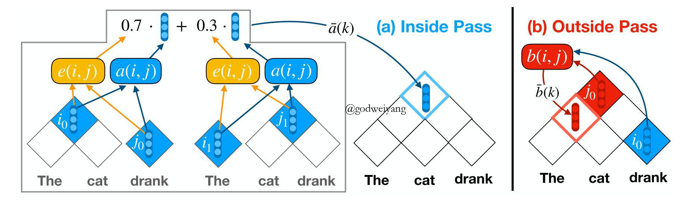
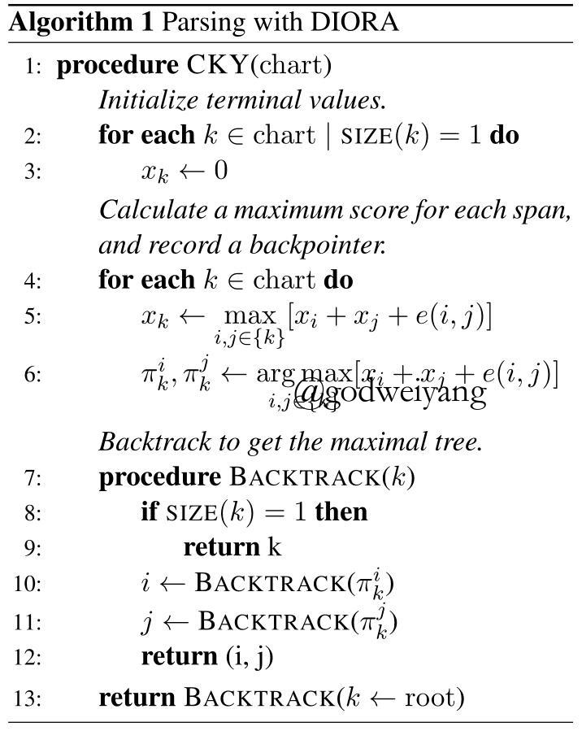
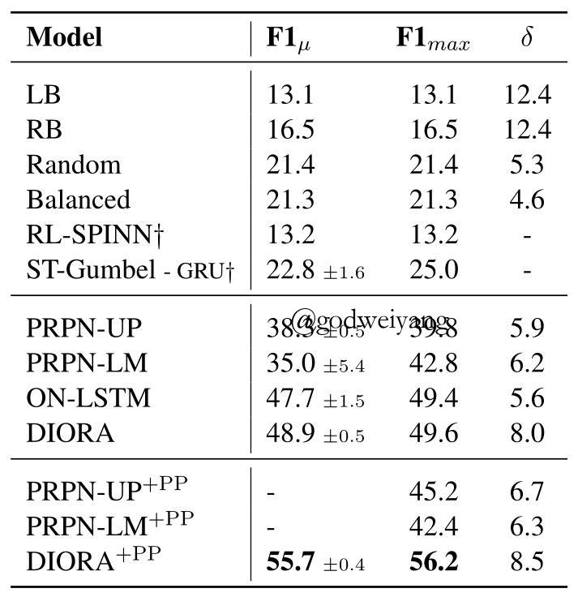
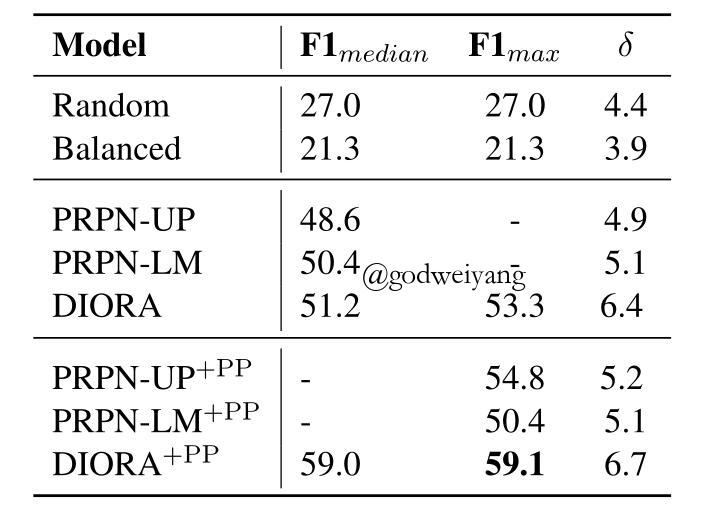
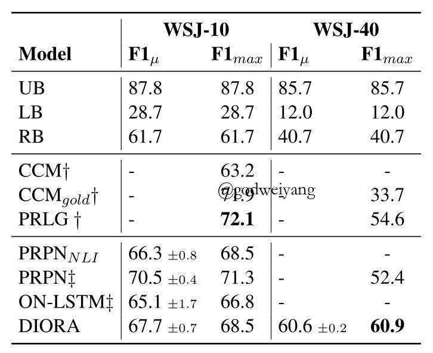
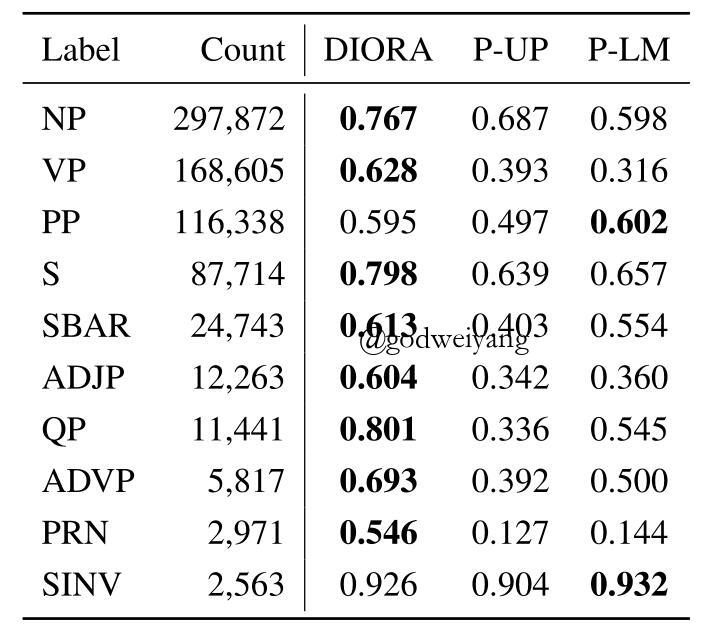
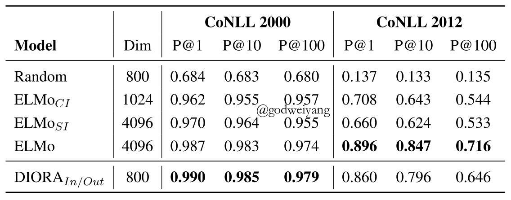

关注公众号【算法码上来】，每日算法干货马上就来！

论文地址：Unsupervised Latent Tree Induction with Deep Inside-Outside Recursive Autoencoders
代码地址：github
今天要分享的这篇论文来自NAACL2019，主要利用inside-outside算法推理出给定句子的句法树，不需要任何的监督，也不需要下游任务作为目标函数，只需要masked语言模型就行了。
介绍
无监督句法分析是现在比较热门，也有很多东西可做的方向。有监督的已经做得非常好了，感觉做不下去了，所以做一做无监督的试试。
这篇论文主要用inside-outside算法算出每个span的表示和分数，然后最大化每个叶子结点的分数，类似于bert的masked语言模型。不用像之前的工作那样，需要最后得到句子和短语的表示，然后用来做下游任务。
本文模型简称叫DIORA，也就是Deep Inside-Outside Recursive Autoencoders。inside步骤其实类似chart parser的前向过程，outside步骤用来重构每个单词。
DIORA在好几个数据集上都取得了非常大的提升。
为了理解这篇论文，推荐先去看一下inside-outside算法：传送门。
DIORA
这篇论文的符号定义有点奇怪，以往都是用span的左右边界$(i, j)$来表示的，但是这篇论文只用几个数字$i$来表示，顺序是按照chart表自底向上，从左向右。也就是按照span长度从小到大排序，相同长度的按照左边界从小到大排序，然后依次给上标号。
首先给定长度为$T$的句子$x_0, x_1, \ldots, x_{T-1}$，每个单词$x_i$都有一个预训练的词向量$v_i$。本文中只讨论二叉树，所以预先将句法树进行了二叉化。
对于短语$k$，定义它的inside向量为$\bar a(k)$，outside向量为$\bar b(k)$，inside分数为$\bar e(k)$，outside分数为$\bar f(k)$。定义它的儿子结点对的短语集合为$\{k\}$，例如$i, j$两个短语可以结合成短语$k$，那么$i, j \in \{k\}$。
Inside过程
首先对于叶子结点，用一个线性变换算出它的向量表示和得分：
\[
\begin{align}
\left[ \begin{array}{c} x \\ o \\ u \end{array} \right] &= \left[ \begin{array}{c} \sigma \\ \sigma \\ \tanh \end{array} \right] (U_{\psi}v_k + b) \\
\bar a(k) &= o + \tanh (x \odot u) \\
\bar e(k) &= 0
\end{align}
\]
其实这就类似于Tree-LSTM的结点函数，因为叶子结点肯定存在的，所以所有叶子结点得分都初始化为0。
然后对于任意一个高层的结点$k$，它的儿子结点对的集合为$\{k\}$。对于其中的任意一对结点$i, j$，定义它俩组合的分数为：
\[
\hat e(i, j) = \phi (\bar a(i), \bar a(j); S_{\alpha})+ \bar e(i) + \bar e(j)
\]
其中$\phi$函数是一个双线性函数：
\[
\phi (u, v; W) = u^T Wv
\]
然后用softmax函数算出每一对$i, j$的权重：
\[
e(i, j) = \frac{\exp(\hat e(i, j))}{\sum_{\hat i, \hat j \in \{k\}} {\exp(\hat e (\hat i, \hat j))}}
\]
最后加权求和求出短语$k$的inside得分：
\[
\bar e(k) = \sum_{i, j \in \{k\}} {e(i, j)\hat e(i, j)}
\]
下面就是计算短语$k$的inside向量了，首先用TreeLSTM或者两层MLP算出结点对$i, j$的向量表示：
\[
a(i, j) = {\rm Compose}_{\alpha} (\bar a(i), \bar a(j))
\]
然后根据刚刚算出的权重进行加权求和得到inside向量表示：
\[
\bar a(k) = \sum_{i, j \in \{k\}} {e(i, j) a(i, j)}
\]
Outside过程
outside其实计算方法和inside很类似，只是不是通过短语$k$的两个儿子来计算了，而是通过它的父亲结点和兄弟结点计算。
首先看一下下面这张模型图：

左半部分inside过程很好理解，右半部分注意的是$k$表示的是当前要求的结点，$j$表示的是它的父结点，$i$表示的是它的兄弟结点。
类比inside过程，首先初始化根结点，注意本文中根节点并没有用inside得到的根结点表示，而是随机初始化的。然后对于下层的结点$k$，计算它的某个父结点$j$和兄弟结点$i$的配对得分：
\[
\hat f(i, j) = \phi (\bar a(i), \bar b(j); S_{\beta})+ \bar e(i) + \bar f(j)
\]
然后还是用softmax函数算出每一对$i, j$的权重：
\[
f(i, j) = \frac{\exp(\hat f(i, j))}{\sum_{\hat i, \hat j \in \{k\}} {\exp(\hat f (\hat i, \hat j))}}
\]
注意这里的$\{k\}$其实表示的是短语$k$的父结点和兄弟结点配对的集合了，和inside过程不一样，但是论文里并没有说。
然后加权求和求出短语$k$的outside得分：
\[
\bar f(k) = \sum_{i, j \in \{k\}} {f(i, j)\hat f(i, j)}
\]
下面和inside过程一样，计算向量表示了：
\[
\begin{align}
b(i, j) &= {\rm Compose}_{\beta} (\bar a(i), \bar b(j)) \\
\bar b(k) &= \sum_{i, j \in \{k\}} {f(i, j) b(i, j)}
\end{align}
\]
在本文中这个${\rm Compose}$函数和inside过程中的是用的同一套参数。
目标函数
因为是无监督语料，所以最后的监督只能回到每个单词上面来，用语言模型来训练。对于单词$x_i$，用$\bar b(i) \cdot \bar a(i)$来表示包含这个单词的所有可能的句法树的得分总和。这里采用margin-loss来作为损失函数：
\[
L_x = \sum_{i=0}^{T-1}\sum_{i^*=0}^{N-1} {\max(0, 1-\bar b(i)\cdot \bar a(i) + \bar b(i)\cdot \bar a(i^*))}
\]
其中$N$是采样的负样本数量，当然这里符号写的感觉也有一点小问题，首先没有写出$i^* \neq i$，其次$i^*$是随机采样的，并不是从0到$N-1$，范围其实也在0到$T-1$。不过意思懂了就行，采样是根据词频。
解码过程
预测阶段要解码出句法树，这就很简单了，用的是传统的CKY算法，只需要使用到inside得分$e(i, j)$就行了，下面是伪代码：

实验
无监督成分句法分析
首先是在二叉化后的PTB和MultiNLI数据集上的结果：


+PP表示做了后处理，也就是预测的时候去掉标点，最后直接把标点连接到根结点，这样效果会好很多。
从PTB数据集结果可以看出，DIORA+PP的提升是最大的（ON-LSTM由于论文发表时没有出代码，所以没有实现），而其他几个模型提升很小甚至还有下降（PRPN-LM）。
并且DIORA产生出的句法树的平均深度是最深的，这也是由于这个模型和前两个模型（PRPN、ON-LSTM）的区别导致的，前两个模型并没有显式地对句法结构进行建模，没有办法得到没有短语结构的表示，而DIORA是按照常规的句法分析的框架来做的，可以显式地得到每个短语的表示与得分。
MultiNLI结果类似，但是有个区别就是，这个数据集的句法树不是标准的，而是通过斯坦福的parser生成的，所以不一定对。所以这个数据集其实考量的是模型对另一个已知模型的拟合能力。
然后是WSJ-10和WSJ-40上面的结果，也就是PTB中长度不超过10和40的句子组成的数据集：

这里为了和之前的论文统一，没有进行二叉化，所以预测出来的句法树F1值有个上限，就是上表中的UB值。可以看出WSJ-40效果还是不错的，但是在WSJ-10上面没有一个神经网络方法能超过之前的传统方法（CCM和PRLG），说明句子长度过短，神经网络的学习能力还有待提高。
无监督短语分割
这个任务就是看模型识别出了句子中有多少个短语，其实包含在刚刚的句法树结构中了。数据集还是用的PTB，结果如下：

可以看出除了两个短语类型，其他短语类型识别出的召回率还是很高的。
短语相似度
短语相似度任务是这样的，首先用DIORA算出每个短语的表示，然后两两短语之间算cos相似度，对于一个短语，如果与它最相似的K个短语的label和它一样，那么这个短语就预测对了。下表是在CoNLL2000和CoNLL2012数据集上的准确率：

其中ELMo分为三种设置，CI表示只输入短语的每个单词然后取平均得到短语表示，SI表示输入一整个短语，最后一个就是输入整个句子了。DIORA的话用短语的inside和outside表示拼接得到。
结果表明，CoNLL2000中DIORA效果最好，但是CoNLL2012的话ELMo效果最好，这也说明了DIORA在细粒度的语料上还有提升空间。还有一点奇怪的就是，在CoNLL2012上，ELMo-CI的效果竟然比ELMo-SI还要好，这也是没法解释的。
最后就是一些模型设置，比如TreeLSTM和MLP对效果的影响，这些部分就去看论文吧。
总结
未来工作主要放在
- 提升细粒度语料准确度。
- 训练更大语料，增加额外的目标函数
- 跨领域、跨语言。